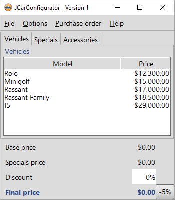
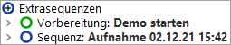
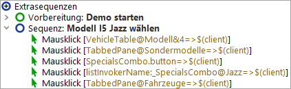

| Version 6.0.3 |
Wir werden nun erste Aktionen in unserem Demo aufnehmen:
|
|  | ||
|
| Abbildung 2.8: Aktionen im JCarConfigurator Demo aufnehmen | ||
Sie finden die aufgenommene Sequenz unter dem "Extrasequenzen" Knoten, wie im folgenden Bild dargestellt.
|
|  | ||
|
| Abbildung 2.9: Der Baum nach Aufnahme der Sequenz | ||
Als Sequenzname wird standardmäßig Datum und Zeit der Erstellung verwendet. Dieser kann anschließend in den Details rechts beliebig angepasst werden.
|
|  | ||
|
| Abbildung 2.10: Die umbenannte Sequenz | ||
Wir wollen nun die aufgenommene Sequenz abspielen.
Sie sollten die exakt gleichen Aktionen sehen, die Sie zuvor aufgenommen haben.
Den aufgenommenen Ablauf sollten Sie auch wiederholt ohne Fehler abspielen können. Rechts unten im Fenster der Testsuite sollte "Beendet: Keine Fehler" zu sehen sein.
| Letzte Änderung: 6.9.2022 Copyright © 2002-2022 Quality First Software GmbH |